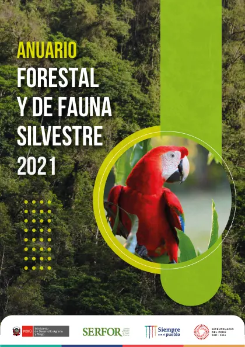
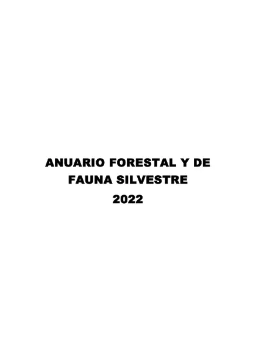
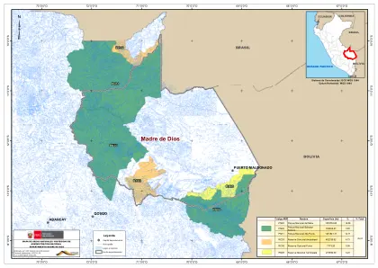
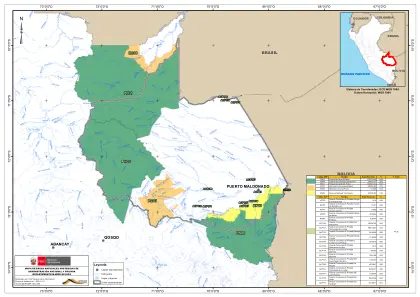
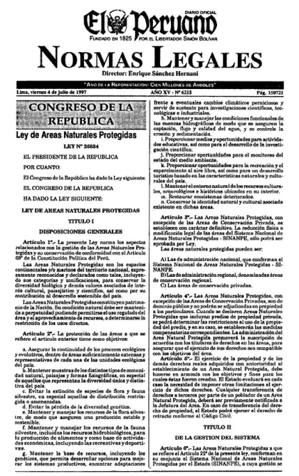
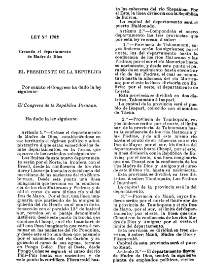

PDFInforme oficial · 2022
Anuario Forestal y de Fauna Silvestre 2021
SERFOR
Perú · tablas de Madre de Dios
Cómo lo usamos en EcoSelva →Bosques · cartografía · ciencia
Los documentos detrás de las historias, las cifras y los mapas de EcoSelva. Una biblioteca de fuentes para aprender sobre Madre de Dios y su contexto peruano.
Explorar la bibliotecaUna fuente, una puerta de entrada
El año corresponde a la publicación, no necesariamente al año de cada dato. Los mapas y estudios conservan su ámbito y sus límites.
Las miniaturas muestran la primera página del original. Los PDF completos se consultan y descargan desde la institución que los publica.
Ver nuestros criterios editoriales →78 recursos

PDFInforme oficial · 2022
SERFOR
Perú · tablas de Madre de Dios
Cómo lo usamos en EcoSelva →
PDFInforme oficial · 2023
SERFOR
Perú · tablas de Madre de Dios
Cómo lo usamos en EcoSelva → PDF
PDFDocumento técnico · 2024
OSINFOR
Madre de Dios
Cómo lo usamos en EcoSelva →
PDFDocumento oficial · 2022
SERNANP
Madre de Dios
Cómo lo usamos en EcoSelva →
PDFDocumento oficial · 2025
SERNANP
Madre de Dios
Cómo lo usamos en EcoSelva →
PDFNorma legal · 1997
Congreso de la República
Perú
Cómo lo usamos en EcoSelva →
PDFNorma legal · 1912
Congreso de la República
Madre de Dios
Cómo lo usamos en EcoSelva →Artículo científico · 2015
Cara A. Rockwell y colaboradores
Concesiones estudiadas en Madre de Dios
Cómo lo usamos en EcoSelva →Artículo científico · 2017
Evert Thomas y colaboradores
Madre de Dios · entrevistas de 2012
Cómo lo usamos en EcoSelva →Publicación académica · 2022
Universidad Nacional Agraria La Molina · Revista Forestal del Perú; Vásquez Martínez y Rojas Gonzáles
Amazonía y Yunga peruana; distribución departamental. Compila bibliografía, colecciones y observaciones de campo; incluye especies utilizadas y con aptitud maderable. No es un censo de árboles ni una medición de producción.
Cómo lo usamos en EcoSelva →Fuente institucional · 2019
SERFOR · Melchor-Castro y Bejarano
Estudio de usos en la Comunidad Nativa de Infierno, mercados de Puerto Maldonado y concesionarios de Madre de Dios. Revisión bibliográfica, caminatas etnobotánicas, entrevistas e identificación botánica; no inventario exhaustivo de toda la flora regional.
Cómo lo usamos en EcoSelva →Fuente institucional · 2022
SERFOR
Orientaciones técnicas para el sector maderable peruano. Censo, planificación, silvicultura, trazabilidad y protección de fauna; no prueba de sostenibilidad de una operación particular.
Cómo lo usamos en EcoSelva →Fuente institucional · 2021
IIAP / Profonanpe · Del Castillo Torres, Freitas Alvarado y Del Águila Pasquel
Amazonía peruana; varios ejemplos y mediciones proceden de Loreto. Se emplean las relaciones ecológicas y criterios de cosecha; no se trasladan cifras, ensayos clínicos ni inventarios a Madre de Dios.
Cómo lo usamos en EcoSelva →Fuente institucional · 2022
IIAP · Rodríguez Vásquez y colaboradores
Manual técnico de Pucallpa, Ucayali, sobre bambúes nativos. Usos y potencialidades de Guadua weberbaueri y procesos de secado; no inventario de empresas o cosechas de Madre de Dios.
Cómo lo usamos en EcoSelva →Publicación académica · 2015
MINAM
Cartografía de cobertura vegetal del Perú; documenta pacales y bosques con paca en Madre de Dios. No determina el uso de cada planta, abundancia de especies ni extracción autorizada.
Cómo lo usamos en EcoSelva →Fuente institucional · Sin fecha indicada
Ministerio de Cultura · BDPI
Pueblo Ese Eja, especialmente las cuencas Madre de Dios y Tambopata. Síntesis institucional con bibliografía; sus prácticas no representan a todos los pueblos ni habitantes de la región.
Cómo lo usamos en EcoSelva →Fuente institucional · 2018
Ministerio de Cultura
Reconocimiento de los conocimientos, saberes y usos asociados a la cestería del pueblo Ese Eja en Madre de Dios. Ámbito cultural específico.
Cómo lo usamos en EcoSelva →Publicación académica · 2010
University of East Anglia · Haugaasen y colaboradores
Experimento de dispersión y enterramiento de semillas en Amazonía central, Brasil. Relación biológica de la especie; no medición de tasas regionales en Madre de Dios.
Cómo lo usamos en EcoSelva →Fuente institucional · 2019
MINAM
Perú · ambientes acuáticos y relaciones ecológicas; esta clasificación no reemplaza la cobertura vegetal de 2015.
Cómo lo usamos en EcoSelva →Fuente institucional · Sin fecha indicada
SERNANP
Descripción oficial de Tambopata; ejemplos de ambientes y fauna de esta ANP, no de todos los registros del mapa.
Cómo lo usamos en EcoSelva →Fuente institucional · Sin fecha indicada
SERNANP
Descripción oficial del Manu; ejemplos de ambientes y fauna de esta ANP, no de todos los registros del mapa.
Cómo lo usamos en EcoSelva →Fuente institucional · Sin fecha indicada
SERNANP
Descripción oficial de Bahuaja Sonene; ejemplos de ambientes y fauna de esta ANP, no de todos los registros del mapa.
Cómo lo usamos en EcoSelva →Fuente institucional · 2023
CINCIA
Río Madre de Dios y tributarios · estaciones del proyecto River Mining, 2020–2022; no diagnóstico de toda la región.
Cómo lo usamos en EcoSelva →Artículo científico · 2022
Gerson y colaboradores
Sitios del estudio próximos y alejados de minería; no mapa de exposición actual.
Cómo lo usamos en EcoSelva →Fuente institucional · 2021
SERNANP
Madre de Dios · gestión del riesgo; no capa de incendios activos.
Cómo lo usamos en EcoSelva →Fuente institucional · Sin fecha indicada
MINAM · Geobosques
Productos de cobertura y pérdida de bosques con periodos y métodos propios.
Cómo lo usamos en EcoSelva →Fuente institucional · Sin fecha indicada
Copernicus
Documentación de Sentinel-2; no resultados calculados para este visor.
Cómo lo usamos en EcoSelva →Fuente institucional · Sin fecha indicada
USGS
Definición y usos de NDVI; no resultados calculados para este visor.
Cómo lo usamos en EcoSelva →Fuente institucional · Sin fecha indicada
USGS
Definición y usos de NBR; no resultados calculados para este visor.
Cómo lo usamos en EcoSelva →Fuente institucional · 2025
Instituto Nacional de Estadística e Informática (INEI)
Departamento de Madre de Dios
Cómo lo usamos en EcoSelva →Fuente institucional · 2020
Gobierno Regional de Madre de Dios
Departamento de Madre de Dios
Cómo lo usamos en EcoSelva →Fuente institucional · Sin fecha indicada
Natural Earth
Perú · ubicación de Madre de Dios
Cómo lo usamos en EcoSelva →Fuente institucional · 2000
Congreso de la República del Perú
Provincia de Manu, departamento de Madre de Dios
Cómo lo usamos en EcoSelva →Informe territorial · 2024
Centro Nacional de Planeamiento Estratégico — CEPLAN
Madre de Dios · diciembre de 2024
Cómo lo usamos en EcoSelva →Síntesis institucional · Sin fecha indicada
Ministerio de Cultura · BDPI
Apartados Introducción, Historia e Instituciones distintivas. Sin fecha de publicación indicada. Se resume la experiencia del pueblo citado, sin generalizarla a otros pueblos. Para PIACI se omite toda localización inferior al departamento y toda ruta o lugar de tránsito.
Cómo lo usamos en EcoSelva →Síntesis institucional · Sin fecha indicada
Ministerio de Cultura · BDPI
Apartados Introducción, Historia e Instituciones distintivas. Sin fecha de publicación indicada. Se resume la experiencia del pueblo citado, sin generalizarla a otros pueblos. Para PIACI se omite toda localización inferior al departamento y toda ruta o lugar de tránsito.
Cómo lo usamos en EcoSelva →Síntesis institucional · Sin fecha indicada
Ministerio de Cultura · BDPI
Apartados Introducción, Historia e Instituciones distintivas. Sin fecha de publicación indicada. Se resume la experiencia del pueblo citado, sin generalizarla a otros pueblos. Para PIACI se omite toda localización inferior al departamento y toda ruta o lugar de tránsito.
Cómo lo usamos en EcoSelva →Síntesis institucional · Sin fecha indicada
Ministerio de Cultura · BDPI
Apartados Introducción, Historia e Instituciones distintivas. Sin fecha de publicación indicada. Se resume la experiencia del pueblo citado, sin generalizarla a otros pueblos. Para PIACI se omite toda localización inferior al departamento y toda ruta o lugar de tránsito.
Cómo lo usamos en EcoSelva →Síntesis institucional · Sin fecha indicada
INEI
Referencia a la expedición de Pedro de Candia en 1538. Publicación histórica sin año visible en esta página; se evita reproducir su lenguaje de conquista o de descubrimiento.
Cómo lo usamos en EcoSelva →Síntesis institucional · 2019
Ministerio de Cultura · Proyecto Especial Bicentenario
Publicado el 26 de diciembre de 2019. Identidad de Faustino Maldonado, travesía de 1861 y relación con el nombre de la ciudad. Síntesis que remite a José Pío Aza (1928) y Gabriel Arriarán; no se atribuye una identidad indígena a los encuentros que la fuente no puede identificar.
Cómo lo usamos en EcoSelva →Norma municipal original · 1985
Concejo Provincial de Tambopata
Original escaneado, página única: fechado el 10 de julio de 1985. Artículo 1: fecha oficial de fundación, 10 de julio de 1902. Considerandos: Juan S. Villalta, instalación de la sede oficial y confluencia de los ríos. El portal cataloga erróneamente la fecha del decreto como 1905; se distingue del texto original.
Cómo lo usamos en EcoSelva →Estudio de campo y diagnóstico · 2009
César Mosquera, Mary Luz Chávez, Víctor Hugo Pachas y Paola Moschella · Conservación Internacional
Portada: abril de 2009; créditos: primera edición, octubre de 2009. Apartados 1.2 y 3.2–3.3: economía extractiva, migraciones a lavaderos desde la década de 1960, expansión aurífera y conflictos. Autoría de los investigadores; el Congreso aloja una copia, no es el autor.
Cómo lo usamos en EcoSelva →Investigación revisada por pares · 2018
Jorge Caballero Espejo y colaboradores · Remote Sensing
Análisis Landsat de 1984–2017 en la Amazonía sur peruana, incluyendo Madre de Dios. Evidencia de pérdida y degradación forestal asociadas a minería; no se presenta como indicador de 2026 ni como prueba de causalidad exclusiva de una carretera. DOI: 10.3390/rs10121903.
Cómo lo usamos en EcoSelva →Estudio técnico oficial · 2006
INDECI · Proyecto INDECI–PNUD PER/02/051
PDF página 21, apartado 2.1: inicio en Urcos en 1922; culminación en 1962 e inauguración en 1965 tras construir puentes. Son hitos diferentes.
Cómo lo usamos en EcoSelva →Plan vial oficial · consulta parcial · Sin fecha indicada
GORE Madre de Dios · DRTC · asistencia de Provías Descentralizado
Apartado 1, Hipótesis de desarrollo departamental: inicio en 1922 y conclusión en 1965. El texto pertinente es visible en el índice público del documento oficial; la descarga directa agotó el tiempo de respuesta durante la revisión. Se contrasta con INDECI, que distingue conclusión en 1962 e inauguración en 1965. No se afirma una única fecha de culminación.
Cómo lo usamos en EcoSelva →Ficha contractual oficial · 2014
Ositrán
Actualizada el 30 de junio de 2014. Página 1: tramo Inambari–Iñapari, subtramos y firma del contrato el 4 de agosto de 2005; construcción prevista en tres etapas. Una fecha contractual no es una inauguración.
Cómo lo usamos en EcoSelva →Memoria institucional · 2011
Ositrán
Páginas impresas 30–31 (PDF 16): culminación del puente Billinghurst en agosto de 2011 y trabajos complementarios del tramo 3. No equivale a una fecha única de operación del corredor completo.
Cómo lo usamos en EcoSelva →Informe oficial de supervisión · 2017
Ositrán
PDF página 12, párrafo 23: inicio del periodo de explotación del tramo 3 el 30 de marzo de 2012. Se distingue de la culminación del puente en 2011 y del inicio contractual de 2005.
Cómo lo usamos en EcoSelva →Investigación revisada por pares · 2018
Kelly E. Jensen y colaboradores · BMC International Health and Human Rights
Investigación en ocho comunidades, con encuesta en cuatro; trabajo de 2014–2015. Recoge oportunidades percibidas, cambios y necesidades de servicios. No representa todas las comunidades ni demuestra por sí sola causalidad regional. Sus fechas generales del corredor no sustituyen la cronología contractual del tramo 3.
Cómo lo usamos en EcoSelva →Norma original · copia en archivo especializado · 1973
Presidencia de la República · Ministerio de Agricultura
Norma original consultada en reproducción del repositorio Legislación ANP de la SPDA. Artículo 1 y fecha final: 29 de mayo de 1973. Se usa el acto de establecimiento, no sus antiguos límites como cartografía actual.
Cómo lo usamos en EcoSelva →Norma original · copia en archivo especializado · 2000
Presidencia de la República · Ministerio de Agricultura
Norma reproducida por Legislación ANP de la SPDA. Artículo 1 y fecha final: 4 de septiembre de 2000. Artículo 2 amplía Bahuaja Sonene; no crea ese parque en 2000.
Cómo lo usamos en EcoSelva →Norma original · copia en archivo especializado · 2002
Presidencia de la República · Ministerio de Agricultura
Norma reproducida por Legislación ANP de la SPDA. Artículo 1 y fecha de emisión: 9 de mayo de 2002. Se distingue de la publicación del 11 de mayo.
Cómo lo usamos en EcoSelva →Compendio legal oficial · Sin fecha indicada
Ministerio del Ambiente · Dirección General de Políticas, Normas e Instrumentos de Gestión Ambiental
Página 280: publicación del D. S. 031-2002-AG el 11 de mayo de 2002. Se distingue de la fecha de emisión del 9 de mayo que consta en la norma original. Las referencias de este compendio son históricas, no un inventario vigente.
Cómo lo usamos en EcoSelva →Comunicación institucional sobre acto documentado · 2019
SERNANP
Nota del 9 de mayo de 2019: convenio entre SERNANP, GORE y ECA Amarakaeri. Documenta un acto de cooperación y sus objetivos, no garantiza todos sus resultados.
Cómo lo usamos en EcoSelva →Comunicación institucional sobre acto documentado · 2026
SERNANP
Nota del 30 de julio de 2026: participación de pueblos Harakbut, Yine y Matsiguenka, instituciones y academia en la cogestión; grupo de monitoreo e investigación intercultural. Referencia fechada, no descripción inmutable del comité.
Cómo lo usamos en EcoSelva →Norma original · 1996
Congreso de la República · Diario Oficial El Peruano
Artículo 9.b, PDF página 3: textos oficiales legislativos y administrativos excluidos de protección autoral, con obligación de respetar el texto y citar la fuente. Publicación: 24 de abril de 1996.
Cómo lo usamos en EcoSelva →Documento oficial · 2026
SERNANP
Categorías, departamentos, superficies legales totales y fechas de los instrumentos. No confundir creación con ampliación.
Cómo lo usamos en EcoSelva →Documento oficial · 2026
SERNANP
Ejemplos: K’erenda Homet (p. 1), Nihii Eupa Francisco y Los Amigos (p. 3). El listado conserva registros con plazos vencidos: no permite confirmar un número departamental vigente.
Cómo lo usamos en EcoSelva →Documento oficial · Sin fecha indicada
SERNANP
Definiciones de parque nacional, reserva nacional, reserva comunal y ACP. Sus estadísticas generales no se utilizan.
Cómo lo usamos en EcoSelva →Servicio cartográfico · Sin fecha indicada
SERNANP · GeoSERNANP
Polígonos PN03, PN08, PN11, RN09, RC03 y RC06. Recortados a Madre de Dios para esta visualización; no se calcula superficie legal desde el dibujo.
Cómo lo usamos en EcoSelva →Servicio cartográfico · Sin fecha indicada
IGN · servido por GeoSERNANP
Proyecto Atlas Digital del Perú. Límites referenciales, no demarcación legal actual. Consulta, CRS, hashes y procesamiento conservados en metadatos.
Cómo lo usamos en EcoSelva →Servicio cartográfico · Sin fecha indicada
SERNANP · GeoSERNANP
Selección de ríos Madre de Dios, Tambopata, Manu, Tahuamanu, Las Piedras, Heath e Inambari. Sin capas de comunidades o lugares de tránsito.
Cómo lo usamos en EcoSelva →Condiciones del servicio · Sin fecha indicada
SERNANP · GeoSERNANP
Autoriza mapas derivados pertenecientes al SERNANP cuando se cita al SERNANP como fuente. No se atribuye licencia Creative Commons a la cartografía.
Cómo lo usamos en EcoSelva →Documento oficial · 2019
SERNANP
Descripción específica del ANP: objetivos, ecosistemas, elementos destacados y relación con personas. Sus cifras se contrastan con el listado legal de 2026 y los mapas departamentales.
Cómo lo usamos en EcoSelva →Documento oficial · 2019
SERNANP
Descripción específica del ANP: objetivos, ecosistemas, elementos destacados y relación con personas. Sus cifras se contrastan con el listado legal de 2026 y los mapas departamentales.
Cómo lo usamos en EcoSelva →Documento oficial · 2019
SERNANP
Descripción específica del ANP: objetivos, ecosistemas, elementos destacados y relación con personas. Sus cifras se contrastan con el listado legal de 2026 y los mapas departamentales.
Cómo lo usamos en EcoSelva →Documento oficial · 2019
SERNANP
Descripción específica del ANP: objetivos, ecosistemas, elementos destacados y relación con personas. Sus cifras se contrastan con el listado legal de 2026 y los mapas departamentales.
Cómo lo usamos en EcoSelva →Documento oficial · 2019
SERNANP
Descripción específica del ANP: objetivos, ecosistemas, elementos destacados y relación con personas. Sus cifras se contrastan con el listado legal de 2026 y los mapas departamentales.
Cómo lo usamos en EcoSelva →Documento oficial · 2019
SERNANP
Descripción específica del ANP: objetivos, ecosistemas, elementos destacados y relación con personas. Sus cifras se contrastan con el listado legal de 2026 y los mapas departamentales.
Cómo lo usamos en EcoSelva →Norma original · 2004
Ministerio de Agricultura · reproducción SPDA
Establece dos áreas de categorías distintas. Emisión 18 noviembre; las fichas SERNANP consignan 20 noviembre, fecha de publicación. No se reproducen anexos espaciales sensibles.
Cómo lo usamos en EcoSelva →Compendio legal oficial · 2012
SERNANP · SINIA
PDF p. 583: Bahuaja-Sonene creado por D. S. 012-96-AG de 17 julio 1996, ampliado en 2000. Antecedentes históricos, no inventario actual.
Cómo lo usamos en EcoSelva →Documento oficial · 2024
SERNANP
R. P. 177-2024-SERNANP. Diagnóstico de incendios forestales, planificación del riesgo y relaciones con el paisaje vecino; no medición de daños en 2026.
Cómo lo usamos en EcoSelva →Documento oficial · 2025
SERNANP
P. 38: minería ilegal identificada en zonas de amortiguamiento, entre ellas Bahuaja-Sonene. Distinguir zona vecina de interior del ANP.
Cómo lo usamos en EcoSelva →Nota oficial fechada · 2025
SERNANP
Distingue Reserva Nacional Tambopata y zona de amortiguamiento de Amarakaeri. No se publican sectores ni coordenadas.
Cómo lo usamos en EcoSelva →Nota oficial fechada · 2026
SERNANP
Respuesta de vigilancia al avance de minería en el área y su zona de amortiguamiento. No demuestra eliminación de la amenaza.
Cómo lo usamos en EcoSelva →Nota oficial fechada · 2026
SERNANP
Alto Purús y Reserva Comunal Purús participan en capacitación mayo–junio 2026. La nota no cuantifica daño dentro de ambas áreas.
Cómo lo usamos en EcoSelva →Registro oficial de consulta · Sin fecha indicada
Ministerio de Cultura
Documenta participación Ese Eja y Harakbut. Una consulta sobre una propuesta no prueba que toda modificación esté aprobada.
Cómo lo usamos en EcoSelva →Diagnóstico hidrográfico · 2009
Autoridad Nacional del Agua — ANA
Cuencas transfronterizas Acre y Tahuamanu · caracterización biofísica e hidrográfica.
Cómo lo usamos en EcoSelva →No hay resultados con esa búsqueda. Prueba otro título o tema.
Miniaturas de la primera página de los documentos originales, acreditadas a la institución indicada en cada tarjeta. Las miniaturas y los metadatos de los PDF conservan su fecha de comprobación en el registro. Las copias del proveedor pueden cambiar. Descargar el registro de fuentes →
Continúa la exploración